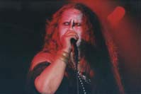

2003.05.24 新宿ARC The live club
KING BOHEMIAN#01
出演:MIND TOUCH/ DaTURA/ ABUBACA（from MAEBASHI）
NINESTUD（ex.BAT CAVE）/DECRYPT/JURASSIC JADE/ WHEEL OF DOOM
●ＪＵＲＡＳＳＩＣ ＪＡＤＥ’Ｓ setlists
ドク・ユメ・スペルマ
くたばりやがれ
Ｐｌａｓｔｉｃ Ｗａｔｅｒ Ｍｏｔｈｅｒ
新曲2
新曲6（I found out)
新曲3（Gaza)
新曲5（Fighet For What？）
新曲4(ひこうきのうた）
メドレー（Ａｆｔｅｒ Ｋｉｌｌｉｎｇ Ｍａｍ～D-DAY～CAN YOUR BIRD SING?～CHAOSE QUEEN）
鏡よ鏡
●ＭＥＭＢＥＲ’Ｓ comment
ＨＩＺＵＭＩ
ＮＯＢ
W.O.Dシン君の誘いで出演したARC。
PAさんも上手。スタッフも一生懸命サポートしてくれて、良い環境でプレイ出来た。
生みの苦しみをたっぷり味わった新曲を披露出来て嬉しかった。
GEORGE
ＨＡＹＡ
いやー改装後のアンチに続いて、またまたお初のハウスでしたね、アーク、はい。お初の所は多少の不安があったりするもんなんですが、凄くやりやすかったです（そらぁスタッフがスタッフだもんねぇ）。
ただ本番でスモークが出た時は死ぬかと思いました、大っ嫌いなんすよ、あれ、いつも私らのライブでケムリが無いのは私が言ってるんです、やめて下さいって、はい。
ただあの日はたまたまスタッフの方に伝えるのを忘れちゃったんです。息出来なくて大変でした。次回は忘れずに伝えて、さらに頑張りますんで、宜しくお願いするっす。はい
| ALBUM |  |
|
| 松下 弘子さん撮影 | ||
●BBS comment
アルバムはいつ！？ですか！ 投稿者：肌着ラーメン 投稿日： 5月25日(日)00時09分25秒
しんえもん改め、肌着です（＾＾
今宵の新曲、とくと聞かせてもらいました。
カッコＥじゃ、あ～りませんか！！
アルバムは今年中に発進されそうですか？
お疲れさまどした（京都風） 投稿者：Tommyちゃん♪ 投稿日： 5月25日(日)01時02分09秒
連日の激務と頭痛に肩こりが加わり、体調最悪の中、ラジニの分も暴れると
宣言したものの、立ってるだけで精一杯になってしまいました。
Nobさん、ごめんなさい！！m(_ _)m
今度は、体調整えて頑張りますので、早く東京でやってくださいまし。
BANDの人は、どんな体調でも、ガツンとライヴやっちゃうから凄い！！
http://homepage2.nifty.com/Tommy/index.html
お疲れ様でした 投稿者：あつ 投稿日： 5月25日(日)11時03分47秒
また、酔っ払ってしまいました(笑）
ライブ楽しかったです。
次回、浜松参戦予定なのでよろしくお願いします。
ありがとうございました！ 投稿者：GEORGE-JURASSIC JADE 投稿日： 5月25日(日)13時50分19秒
昨日の新宿ARC、周辺は歌舞伎町とはまた違った危険なかおりがプンプンでしたが、
観に来てくれた方々、スタッフの方々、対バンの皆さん、
どうもありがとうございました！たっぷり楽しませてもらいました！
しばらく都内でのGIGはありませんが、またヨロシクお願いします！
新兵器を使ってみましたが、まだまだ修業しなきゃいかんですな…。汗
＞粕谷@MIND TOUCHさん
おつかれっした！来月はつくばで一緒です！頑張りましょう！
＞WHEEL MITSUさん
誕生日おめでとう！
いろんな苦労がある様だけど、ちょっとづつ乗り越えて行きましょう！
また一緒に出来るのを楽しみにしてます！
俺もプロビデンスのアレ欲しいなぁ～。
＞肌着ラーメンさん
すごい名前になりましたね！笑
アルバム…出したいですねぇ～。いつになるかはわかりませんが…頑張ります！
＞Tommyちゃん♪さん
体調悪かったんすか…そんでも楽しんで頂けたならよかったです！
＞あつさん
浜松、チビッコの頃静岡県民だった俺が入ってから初上陸です。お待ちしてます！
お疲れ様でした 投稿者：SSMETAL 投稿日： 5月25日(日)14時22分30秒
昨日はお疲れ様でした。やっぱマジでスゴイです。
昨日、披露した新曲にしても、
これまでのJURASSIC JADEのフォーマットながらも、
随所に新機軸を見せてて、
更なる可能性を感じさせてくれるのに恐れ入りました。
暫く東京方面でのライヴが無くて残念ですが（来週の大阪もいきたーい）、
次も出来る限り行かせていただきます。
昨日のライヴ前の音出しの段階で、
NOBさんが“太陽と戦慄”のリフを弾いたかと思えば、
GEORGEさんが“Sunshine Of Your Love”のイントロを弾くという、
そんな光景が何とも面白かったです。
http://8623.teacup.com/monstermagnet/bbs
ありがとう！ございました。 投稿者：NOB-JURASSIC JADE 投稿日： 5月25日(日)14時55分31秒
熱い一日でした。
ARCにお越しのみなさん、ありがとうございまいた。対バンのみなさんありがとうございました。
スタッフのみなさん、一生懸命のサポートありがたかったです。
いかがでしたか？イヴェントの雰囲気やJURASSIC JADEのライブは・・・。
初めての場所や周囲の雰囲気に戸惑いはありましたが、全力を尽くしました。
新曲も披露できて、嬉しいです。
どうか、感想聞かせてください。
＞粕谷@MIND TOUCH 様
お疲れ様！楽しかったね。
来月の筑波よろしくです。
＞WHEEL MITSU 様
ありがとう！W.O.Dに負けないように頑張りました。
いつも打上げで話せないのは、ミツ君が俺を避けてるから・・・？
＞肌着ラーメン 様
二重まぶたが気になった肌着ラーメンさん。
あんまり話せなくってすいません。
危険な時期にアジアの旅をしょうと考えるあなたに、あなたの本質をみます。（笑）
濃厚な（そして笑いたっぷりの）旅の土産話を期待してます。
＞Tommyちゃん♪ 様
最後まで見てくれただけで、感謝です。
自分の体調が違う時って、受け止める力や受けた時の感情にいつもと違うものが生まれますよね。
それはそれで、面白いのでは・・・。
しかし、なにしろ、お体ご自愛です。
＞あつ 様
ありがとう。ダイブしてましたね。
打上げ参加も嬉しいです。
浜松で会いましょう。（お気遣いありがとう）
追伸１：打上げから帰宅しょうと準備していたら、UNITEDシンゴに
「3：00から四人囃子のライブをTVでやるよ」と聞かされ急いでアパートへ。
残念ながら最後の40分ぐらいしか見れませんでした。
どなたか再放送の情報を知りませんか？
「空飛ぶ円盤に弟がのったよ」が聞きたい（見たい）のです。
追伸２：長年愛用していたローランドSDE-1000（ラックタイプのデジタル・ディレイ）が壊れました。
演奏中に勝手にメモリーしたタイムが変わっていきます。（ショートディレイ⇔ロングディレイへ）。
急いで中古屋めぐりをし手に入れたので（修理してる時間がなかったので）捨てることになったのですが、なにしろ名機ゴミにするには惜しい！んです。
どなたか直して使おうと思う方はいらっしゃいませんか？（ただで差し上げます、もちろん）
http://www2.odn.ne.jp/~cdt27630/index.html/
お疲れ様でした！ 投稿者：Hiraga@ABUBACA 投稿日： 5月25日(日)21時01分49秒
昨日、ご一緒させて頂いた群馬県前橋市のアブバカです。
同じステージに立てた事をとても光栄に思っております。ありがとうございました。
また、お会い出来る事を楽しみにしています。
これからも宜しくお願い致します。是非、前橋にも、、、。
http://www.abubaca.com
お疲れ様でした！ 投稿者：サッチンマン＠Ｇ．Ｇ 投稿日： 5月26日(月)00時57分19秒
遅ればせながらライブお疲れ様でございました！
わたくしとある事情でほとんど寝ていない状況にあったため足はふらつく、目は回るといった体調のままの参戦でしたが、やっぱりじっとしていられませんでした！！
ちなみにどこもぶつけませんでした（笑）！ＮＯＢさんが体調悪い時の受け止め方の違いのお話されてましたけど、コレ本当ですね。わたくし的に今回は迫り来る音を全部飲み込んでしまって、トリップ寸前でした。確かにコレはこれで気持ちよかったデス！
都内でしばらくないのがとても残念ですが、首を長くしてお待ちしております
至福のとき 投稿者：DT+Cui 投稿日： 5月26日(月)02時48分00秒
お疲れ様でした。DT+Cui（ＭＣネーム）こと池田です。
先日は、ライブ後にＮＯＢさんを捜していたのですが、なぜか見つからず声もかけずに失礼してしまいました。ライヴは今回も思いっきり楽しませて頂きましたよ～。新曲、どれもカッコイイけど、やはり「飛行機の歌」は特に印象に残りますね。早く新作音源が聴きたい！
ＡＲＣも初めて行きました。音がいいですね。PIT INの向かいなのはビックリしましたが、そちらの客が間違えてARCに入ってジュラを観て、「これはいいバンドだ！オーネットコールマンに通ずるものがある！」とか言っている光景を目にする事も出来ました（嘘）。
東京のライブがしばらくないのは寂しいですが、次の予定が決まるまで、震えて待ちます。
http://www.tctv.ne.jp/members/rich/
遅くなりましたが・・・ 投稿者：粕谷@MIND TOUCH 投稿日： 5月26日(月)07時35分06秒
書き込みが遅くなってしまいました…
MIND TOUCHのBaの粕谷です。
24日の新宿はお疲れ様でした♪
ホント楽しいイベントで久々に暴れまくらせていただきました!!
6月の筑波もご一緒させていただけると言うことで、とても楽しみにしています♪
今後もヨロシクお願いします!!
失礼します。
＞管理人様
突然で申し訳ナイのですが、自分らのH.PにLINKさせていただいてもよろしいでしょうか？
すいません、ヨロシクお願いします。
http://www.tosp.co.jp/i.asp?i=MIND01
遅くなりましたが 投稿者：mibo 投稿日： 5月26日(月)10時26分03秒
土曜日はお疲れ様でした。
また、チケットの件では、いろいととお手数お掛けしました。
最近新曲の比率がかなり増えたような感じがします。
そして段々と、その曲が身体に馴染んでいく様な感じで楽しいです。
土曜日初めて聞いた曲も、凄くカッコよかったです。
体調不良でしたが一気に吹っ飛びました。ありがとうございました。
5.24新宿ARC 投稿者：'おさる'改め'さる' 投稿日： 5月26日(月)22時49分38秒
お疲れ様でした。
新曲(I Found Outでしたっけ？)は即お気に入り登録。理由はもちろんGeorgeさん。
またJJに新しい色が注入されましたね。さらにこれから様々な色を注入して混ぜまくって欲しいです。
曲順表覗いたらメドレーに'とり'って書いてあって最初は？でしたよ。
最近メドレー固定化＋新曲増加により御無沙汰曲が増えてきてたので久々？に聞けて良かったです。
今回も2ケ月空いたのに次は3ケ月程都内のライブは無し...駄目です！廃人化してしまいます！！却下です！！！
nobさん企画@目黒熱望！
遅くなりましたが... 投稿者：WHEEL MITSU 投稿日： 5月27日(火)02時19分30秒
遅くなりましたが、24日はありがとうございました！
おかげさまで、とても楽しいイベントになりました！
今回もJURASSIC JADEの熱いライブに感無量でした...。
また御一緒する機会がありましたら、宜しくお願いします。
ちなみにノブさんを避けてるなんて....いつもタイミングが悪く話せません。
次のチャンスは見のがしませんので、宜しくです！！
ぐらぐらした時、自分の頭の中かと思った・・・。 投稿者：NOB-JURASSIC JADE 投稿日： 5月28日(水)00時50分28秒
凄く揺れました！
火を止めたり、靴を履こうか迷ったり・・・。
今週末6月1日（日）ベイサイド・ジェニーのイヴェントに参加します。
ゴージャスなメンツにＪＵＲＡＳＳＩＣ ＪＡＤＥ一同燃えています。
お時間おありの方、是非！是非！お越しください。
熱い声援で俺たちを勇気付けてください！
＞SSMETAL 様
ありがとうございます！
「JURASSIC JADEのフォーマット」って言葉にするとどんな感じなんでしょうか？
新曲も気に入ってくださって嬉しいです。
＞Hiraga@ABUBACA 様
お疲れ様です。
HIZUMIはお二人のVoのからみ具合面白がってました。
前橋呼んでください。
＞サッチンマン＠Ｇ．Ｇ 様
ありがとう。ちらっと、なんか目が回ってるように見えた。
本当に辛かったんだね。打ち上げにもいなかったし。
次回体調万全で来て下さい。
＞DT+Cui 様
こちらこそ挨拶できなくってすいません。
楽しんでもらえて嬉しいです。
そういえば、CD-Rでいただいた音源とてもセンスが良いし引っかかってくる言葉満載ですね。
ジャンルなんか本当に関係ないですね、心に触れるものは・・・。
＞粕谷@MIND TOUCH 様
相互リンクお願いします。
それで、お願いなんですが、キャッチフレーズいただけませんか？「MIND TOUCHとは」という。
＞mibo 様
とても常連のmiboさん、いつもありがとうございます。
そして書き込みも感謝です。
miboさんに飽きられないように（笑）新曲を作り続けてる結果ですね、音源になってない曲が多くなってるのは・・・。
これからも、よろしくお願いします。
＞'おさる'改め'さる' 様
改名の訳は・・・？
GEORGEの力が発揮されはじめましたかね？
これは、めっちゃくちゃ嬉しいです。
企画やりたいですね。頑張ります。
＞WHEEL MITSU 様
次回はオヤジの語り聞かせちゃいますよ、くどくどと。（笑）
http://www2.odn.ne.jp/~cdt27630/index.html/
BACK TO